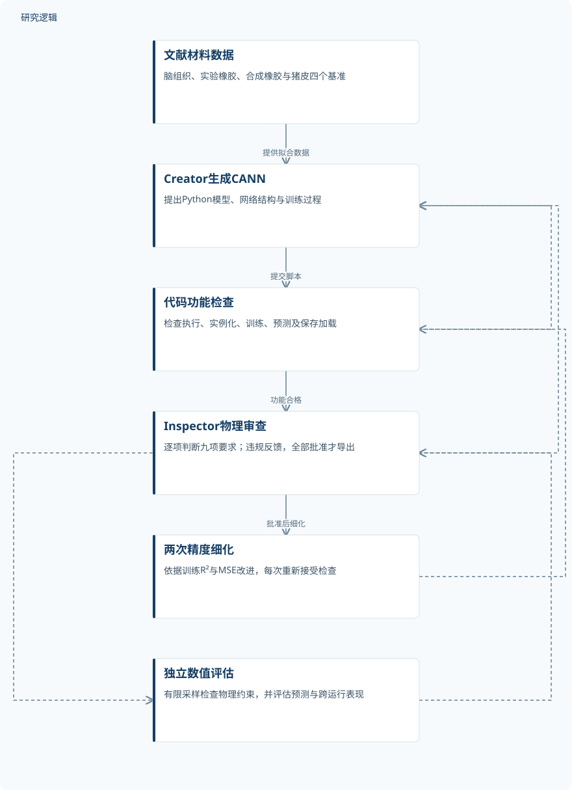
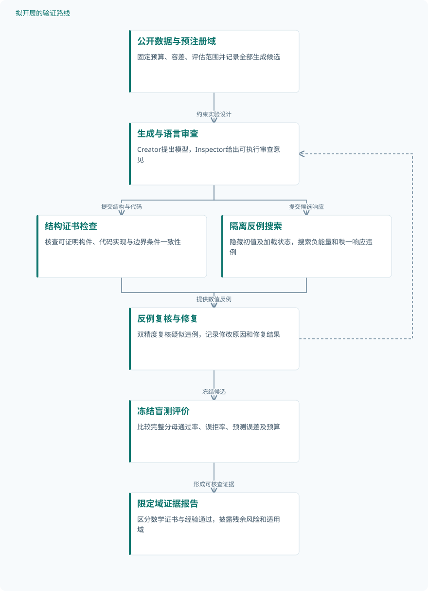

论文精读
大语言模型驱动物理约束本构模型设计：双智能体优于单智能体
LLM-driven design of physics-constrained constitutive models: two agents are better than one
精读更新 2026-10-08 23:35 · 依据论文全文整理
让大语言模型写出能拟合材料曲线的代码，并不等于得到可信的本构模型：真正困难的是，模型能否保持物理约束，并推广到未见变形。Tacke等提出Creator–Inspector双智能体流程，将模型生成与物理审查分工，再以独立数值检查评估输出。四个材料基准显示，这种分工能够提高经验性物理通过率，但工具、提示知识与模型骨干之间存在明显交互。本文的阅读价值，正在于同时呈现自动建模的进展与可信验证的边界。
文章目录
从拟合材料曲线，到生成可用的本构关系
本构模型连接材料实验与结构计算，必须从有限、相对简单的加载数据推广到复杂服役状态。传统建模同时依赖连续介质力学、函数构件选择和科学编程知识，自动化因此具有实际价值。作者指出，已有单智能体GenCANN流程缺少系统性的物理检查；黑箱模型可能外推不佳或违反对称性，则属于研究背景，不能当作本文对所有数据驱动方法的实验结论。
这项研究的目标不是全面超过人类专家，而是让缺少建模经验的用户获得准确且具有物理意义的模型。已验证范围限定为不可压缩超弹性材料，覆盖各向同性脑组织、橡胶和横观各向同性猪皮。本文复用文献数据，没有重新开展人类或动物取样；向黏弹性、符号本构律等对象扩展仍是研究设想。
生成、审查与数值验证是三道不同关口
Creator生成完整Python模型，先接受执行、实例化、训练、预测和保存加载检查；Inspector随后逐项审查物理约束，发现问题便反馈修改，全部获批才导出。初始模型获批后，根据训练预测及R²、MSE再改进两次，每次重新检查，完整运行形成三个获批模型并选优。Inspector批准不是数值验证通过，后者由确定性验证器另行判定。
模型以CANN为载体，由不变量预测标量应变能，再通过自动微分得到应力：P=∂Ψ/∂F−pF⁻ᵀ。各向同性采用I₁、I₂，横观各向同性增加I₄、I₅并学习纤维方向；九项要求包括热力学一致性、应力对称性、客观性、材料对称性、多凸性、体积增长条件、能量与应力归一化、应变能非负性。架构的物理性质只有正确实现才可继承，不能由网络名称直接保证。
验证器通过变形、旋转、路径和扰动方向寻找反例，多数比较采用相对容差10⁻³、绝对下限10⁻⁴。基础变形约35个，横观各向同性扩充至约53个；椭圆性检查使用伸长网格及两组各200个Fibonacci方向。多凸性实际以其推论椭圆性作数值探查，而体积增长条件因J=1直接返回通过，二者均有明确适用边界。
原研究：模型生成与物理审查的分层流程


Inspector控制修改与导出；确定性数值验证提供后续经验标签，工具变体允许Inspector选择性调用验证器。
下载 SVG图示关系说明
实线表示相邻阶段的信息流，虚线表示跨阶段联系或反馈。
文献材料数据 → Creator生成CANN：提供拟合数据；Creator生成CANN → 代码功能检查：提交脚本；代码功能检查 → Creator生成CANN：功能失败修正；代码功能检查 → Inspector物理审查：功能合格；Inspector物理审查 → Creator生成CANN：违规反馈；Inspector物理审查 → 两次精度细化：批准后细化；两次精度细化 → 代码功能检查：改进后复审；Inspector物理审查 → 独立数值评估：导出后评估；独立数值评估 → Inspector物理审查：工具变体可调用
四个基准，区分曲线点、材料来源与生成重复
脑组织数据来自Budday等的皮质灰质研究，原始取材涉及10个人脑，每种加载模式17个点，涵盖拉伸、压缩和剪切。Treloar实验橡胶与Linka等的合成橡胶每种协议15个点，采用单轴、等双轴和纯剪切；合成数据具有闭式真值，不是新增实物试验。猪皮数据包含402个点、五种双轴协议和十条方向曲线，这些点与曲线均不能替代独立试件数量。
橡胶沿用原始CANN训练–测试划分，但具体点数和比例未报告；猪皮随机留出20%数据点，是否隔离试件或整条曲线未报告。两种骨干各比较仅Creator、双智能体及工具版双智能体，每个基准配置进行10次独立运行，另有最小提示消融。图8至图10展示选优预测，图12补充跨运行统计，因此不能把全文概括为只有最佳结果；独立试件数、增强数量和完整选模隔离规则仍缺失。
| 验证任务 | 样本与规模 | 主要结果 |
|---|---|---|
| 四基准上的物理通过率与工具访问消融 | 每基准、每配置10次独立运行，每次三个获批轮次；各判断组完整分母及被拒模型抽样量未报告。 | 仅Creator→双智能体→工具版：Opus为90%→95%→93%，Kimi为47%→60%→83%；均为四基准汇总。 |
| 脑组织与猪皮的专家基线预测比较 | 脑组织原始取材10个人脑，每模式17点；猪皮402点、十条曲线。独立试件数未报告；预测从10次运行选优。 | 脑组织拉伸/压缩/剪切R²：基线0.96/0.99/1.00，Kimi 0.614/0.651/0.829，Opus 0.453/0.876/0.981；猪皮均值为0.83/0.80/0.90。 |
| 合成橡胶拟合、未见路径泛化与外推 | 每种训练协议15个点；从10次无工具双智能体运行选最佳合规模型。独立仿真数、平面评估点数未报告。 | 训练工况预测近乎完美；基线范围外出现可见误差但远低于5%，生成模型在所评估范围未明显降精度。 |
| 合成橡胶的领域知识提示消融 | 各配置精度统计涉及三种工况、10次独立运行；最小提示Opus无工具双智能体导出30个模型。 | 完整→最小提示：Opus三组90%→83%、100%→0%、97%→90%；Kimi三组47%→0%、57%→30%、87%→77%。 |
展开数据来源、分组、对照与验证边界
四基准上的物理通过率与工具访问消融
数据来源。复用脑组织、实验橡胶、合成橡胶和猪皮数据；比较生成模型的物理检查结果，而非新增材料试验。
分组与工况。Opus与Kimi分别设置仅Creator、Creator–Inspector、带数值工具Inspector三组；被拒模型仅随机导出子集。
数据划分。橡胶沿用原始CANN划分；猪皮随机留出20%点；脑组织划分及各组具体点数未报告。
对照与消融。仅Creator为流程基线，无工具双智能体为工具访问消融参照；GenCANN不是这里的直接数值对照。
评价指标。获批导出模型通过全部数值检查的比例；多凸性以椭圆性探查，增长条件在不可压缩域直接通过。
验证边界。有限采样不能证明全域满足；分母与置信区间缺失。工具版Inspector使用同套验证器，不能据此认定独立审查能力。
脑组织与猪皮的专家基线预测比较
数据来源。脑组织采用Budday等皮质灰质数据；猪皮采用Taç等公开双轴数据，分别考察各向同性与纤维各向异性。
分组与工况。脑组织为拉伸、压缩、剪切；猪皮为等双轴、两个strip-axial及两个off-axial协议，各记录两方向应力。
数据划分。脑组织具体划分未报告；猪皮随机留出20%点，未报告按试件或曲线隔离；专家猪皮基线使用全部数据。
对照与消融。脑组织为Pierre等主伸长基底CANN；猪皮为Linka等超参数搜索CANN；生成模型统一采用不变量基底。
评价指标。脑组织分加载条件报告R²，猪皮报告十条曲线平均R²，均无量纲；应力分别以kPa、MPa展示。
验证边界。脑组织基底不同、猪皮训练数据条件不同，难以分离方法贡献；猪皮弱伸长方向是共同短板，选优结果不代表平均表现。
合成橡胶拟合、未见路径泛化与外推
数据来源。Linka等引入的虚构橡胶材料，具有闭式本构真值；在Treloar不变量平面上比较应力预测相对误差。
分组与工况。训练为单轴、等双轴和纯剪切三条路径；路径之间状态评估泛化，超出训练范围状态评估外推。
数据划分。沿用原始CANN训练–测试划分；三条路径外的平面状态未参与训练，具体划分数量与外推边界未报告。
对照与消融。Linka等原始CANN专家基线，对比Opus和Kimi无工具双智能体；本文未重复网络规模匹配实验。
评价指标。P₁₁相对误差，单位%；图中色标0%—5%，但误差公式、近零分母处理及汇总统计未报告。
验证边界。缺少完整生成公式、评估网格及精确最大误差；容量未匹配，不能扩大为任意变形下的泛化保证。
合成橡胶的领域知识提示消融
数据来源。在同一合成橡胶基准上，将解释约束和检查建议的完整提示替换为仅列九项约束名称的最小提示。
分组与工况。两个骨干各含仅Creator、无工具双智能体、工具版双智能体；比较完整与最小提示并按约束诊断失效。
数据划分。橡胶沿用原始CANN划分，具体训练测试点数未报告；该消融没有另报告独立验证集。
对照与消融。完整提示是知识供给对照，仅Creator是审查干预对照，无工具双智能体是工具访问对照。
评价指标。获批导出模型的数值通过率（%）；另汇总平均R²和标准差，但精确柱值未报告，负均值绘图截为零。
验证边界。Opus失败的30个模型均违反材料对称性；这是特定提示与骨干的失效，不是双智能体普遍结论。其他组分母未报告。
双智能体有收益，但审查也可能制造错误
四基准汇总中，加入Inspector后，获批导出模型的数值通过率在Opus上由90%升至95%，Kimi由47%升至60%；开放工具后分别为93%和83%，收益并不一致。合成橡胶最小提示下，Opus无工具双智能体导出的30个模型全部失败，而完整提示对应通过率为100%。作者将该失效归因于错误质疑推动Creator加入不当体积项，说明审查者也需要领域知识与可核查证据。
精度优势具有材料依赖性：脑组织三个加载条件下，主伸长基底专家模型均优于不变量生成模型，基底差异妨碍直接归因。猪皮平均R²为基线0.83、Opus 0.90、Kimi 0.80，但基线全数据训练、生成模型留出测试点，训练条件并不一致。两个橡胶基准整体接近完美拟合，跨运行统计仍发现Opus双智能体一次R²为0.66的异常，不能用最佳曲线替代稳定性。
合成橡胶在Treloar不变量平面的路径间与范围外状态上，生成模型精度未明显下降，但缺少精确最大误差及评估边界。有限采样通过不是全域物理证明，各组完整分母、网络容量匹配及部分统计细节也不足。展示代码中的硬截断和固定P₃₃=0压力处理，还提示部署前应核查光滑性与边界适配，不能把代码注释视作保证。
从这篇论文走向下一项研究
以下为结合研究方向提出的候选方案，实验设计与预期目标有待验证。
用独立反例搜索约束双智能体的物理审查
问题与短板。现有通过率依赖有限采样，工具版又与评估共享验证器，难以辨别独立审查能力。应优先研究训练检查之外的盲测反例，而不是继续增加未经校准的语言审查。
改进机制。保留Creator提出结构的自由度，将Inspector意见转成可执行检查，再由隔离的反例搜索器优化最小秩一响应和最低能量。对可证明构件提供结构证书，对其余候选只声明限定域内经验通过。
候选创新。候选创新是将结构证书、盲测反例与修复日志组成证据链，而非把验证器调用本身当作创新。相关文献Physics-Audited Agentic Discovery的摘要已提出固定评估和高违例搜索，本路线拟进一步面向本构代码审查组合这些机制。
数据与实验设计。建议设计复用公开CANN数据与本文日志，在四基准、两骨干和各配置下各运行20次；独立评估器隐藏旋转、面外剪切及搜索初值。记录全部候选和拒绝模型，生成重复与材料试件分别计数。
对照与消融。对照仅Creator、原双智能体、全量工具审查和隔离反例搜索，匹配训练预算与网络容量。消融结构证书、搜索反馈和隐藏测试，并注入已知错误以评估漏检与误拒。
成功判据。预注册采样域和容差，以完整分母报告通过率及区间；成功须在匹配预算下减少隐藏反例与错误拒绝，同时不恶化留出误差。未找到反例仍不得表述为全域证明。
风险与替代方案。反例搜索可能代价高或误判浮点噪声，可用双精度复核和分级搜索降低风险。若自动证明不可行，退回人工审核的构件目录，并缩小可声明有效的变形域。
面向未见加载的容量匹配与不确定性评估
问题与短板。随机留出曲线点不足以验证跨路径或跨试件泛化，现有比较还混入网络容量和函数基底差异。应将问题转向同预算模型在未见加载下的误差与可信范围。
改进机制。按完整加载路径隔离训练与测试，统一不变量基底及参数预算，再让候选集预测分歧提示高风险状态。对具有闭式真值的合成材料可检验区间覆盖，对实物数据则保留来源和试件层级。
候选创新。候选创新是把物理审查结果与外推不确定性共同用于模型选择，而非只选最高R²。相关岩石本构研究摘要已采用Epinet量化认知不确定性；将其与本流程结合只是待验证方案，不能移用其效果。
数据与实验设计。建议设计先复用公开橡胶和猪皮资料，轮流留出整条加载协议，各配置重复20次；若公开资料无试件标识，只评价跨路径。跨试件结论需要补充采集并记录来源，不能默认已有仪器或独立试件。
对照与消融。统一数据、基底和参数预算，对比专家CANN、仅Creator及双智能体；消融点级与路径级划分、容量约束和不确定性筛选。测试集冻结，模型选择只使用另行留出的验证数据。
成功判据。以未见路径误差、最差方向误差、区间覆盖和物理违例共同判定成功，报告全部运行而非仅最佳者。建议预注册90%预测区间，并检查误差随外推距离增长时能否得到合理预警。
风险与替代方案。候选分歧可能低估共享架构偏差，小样本也会使校准不稳定。可加入不同可接受构件与基底作为敏感性对照；若覆盖不足，则采用保守适用域和拒绝预测，不输出虚假的高置信结论。
研究建议：建立与审查隔离的物理证据链


对应第一条路线。结构证书与隐藏反例评估并行，所有改善均需实验验证，未发现反例不等于全域证明。
下载 SVG图示关系说明
实线表示相邻阶段的信息流，虚线表示跨阶段联系或反馈。
公开数据与预注册域 → 生成与语言审查：约束实验设计；生成与语言审查 → 结构证书检查：提交结构与代码；生成与语言审查 → 隔离反例搜索：提交候选响应；结构证书检查 → 反例复核与修复：定位实现问题；隔离反例搜索 → 反例复核与修复：提供数值反例；反例复核与修复 → 生成与语言审查：反馈修复；反例复核与修复 → 冻结盲测评价：冻结候选；冻结盲测评价 → 限定域证据报告：形成可核查证据